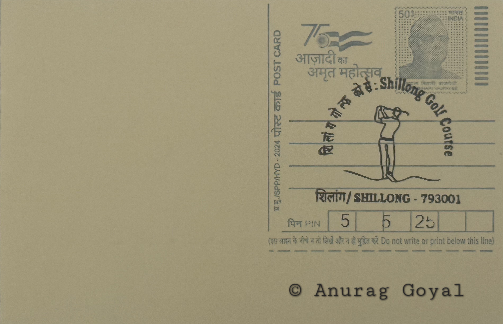

Shillong Golf Course
Ka Golf Course jong Shillong


Golf arrived in Shillong in 1898, when a group of British civil service officers posted to the Assam administration sought to recreate the links of home amid the pine-covered hills of the Khasi plateau. Accounts credit J.C. Arbuthnott and B.C. Allen, two keen Indian Civil Service golfers, with selecting a site in the Laban locality, in the area now occupied by the Garrison Ground and Hydari Park, where they laid out a modest nine-hole course. The choice of ground was deliberate: the naturally rolling valley needed little reshaping to serve as fairway and green, a quality that would later define the course's reputation and distinguish it from most constructed links of the period.
The course holds a recognised place among the oldest golf grounds in India and is widely cited as the first eighteen-hole course in the country following its later expansion. Its renown rests chiefly on an ecological rather than architectural distinction: the United States Golf Association and Museum has referred to it as the 'Gleneagles of the East' in recognition of its unaltered, undulating terrain, a rare case of a championship-standard course shaped almost entirely by natural contours rather than engineered landscaping. This status has made it a point of reference in histories of colonial-era golf across British India, alongside clubs established in hill stations such as Shimla and Ootacamund.
The original nine-hole layout, opened in 1898 at an elevation of roughly 5,200 feet, was expanded into a full eighteen-hole course in 1924 under the direction of C.K. Rhodes, with EL Watts and Captain Jackson credited in various accounts with surveying and completing the additional holes. The course winds through groves of pine and rhododendron, its fairways crossing natural streams and valleys that double as hazards without requiring artificial bunkering on the scale typical of flatland courses. This reliance on existing topography, rather than earthworks, has remained the course's defining physical characteristic since the expansion was completed.
Shillong itself grew up around this colonial recreational culture, having been developed by the British as the administrative capital of undivided Assam from 1874 and later favoured as a hill retreat for its temperate climate, an identity the golf course has helped sustain in the public imagination as the 'Scotland of the East.' The course has hosted national-level amateur and professional tournaments over the decades, drawing competitive golfers from across India to a venue whose terrain is considered genuinely testing rather than merely scenic, with several holes requiring shots across ravines or around tree lines that cannot be altered without disturbing the course's natural character.
The Shillong Golf Club, which administers the course, continues to operate it as a functioning eighteen-hole facility open to members and visiting players rather than as a preserved relic, maintaining the clubhouse and grounds alongside the Meghalaya Tourism Department's promotion of the site as a heritage attraction. Its continued use for competitive play, combined with its standing as one of the few century-old natural courses still active in Asia, keeps it a working link between Shillong's present-day sporting calendar and the colonial recreational institutions from which the city's character was built.
| Date of Introduction | January 17, 2025 |
|---|---|
| Address | Senior Postmaster, |
| Shillong GPO, | |
| East Khasi Hills (dt.), Meghalaya - 793001. |